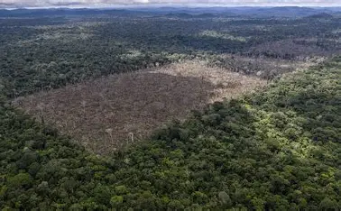

Deforestation refers to the clearing or thinning of forests by humans, often to make space
for agriculture, infrastructure, or mining activities. This process has become one of the most
significant environmental issues in recent decades. Forests are home to a vast array of plant and animal
species, many of which are found nowhere else on Earth. When trees are removed, these ecosystems are
disrupted, leading to loss of biodiversity and extinction of wildlife. Forests also act as natural carbon sinks,
absorbing carbon dioxide from the atmosphere and helping to regulate the Earth's climate. Their destruction
contributes to increased greenhouse gas levels and global warming. Moreover, deforestation affects the water cycle,
leading to changes in rainfall patterns and increasing the risk of natural disasters such as floods and landslides.
It also impacts indigenous peoples who rely on forests for food, shelter, and cultural traditions. The rapid rate
at which forests are disappearing raises serious concerns about the health of the planet and the future of all living beings.

Deforestation has far-reaching impacts on the environment, biodiversity, climate, and human life. One of the most immediate
effects of deforestation is the loss of habitat for countless species of plants and animals. Forests are among the richest
ecosystems on Earth, housing over 80% of terrestrial species. When trees are cut down and land is cleared, animals lose their homes,
food sources, and breeding grounds, leading to population decline and even extinction. In addition to the loss of biodiversity, deforestation
significantly affects the global climate. Trees absorb carbon dioxide—a major greenhouse gas—and help regulate temperature. When forests
are removed, not only is this natural absorption lost, but the carbon stored in trees is also released into the atmosphere, accelerating climate change.
Another serious consequence of deforestation is soil degradation. Trees help bind the soil with their roots, preventing erosion and
maintaining soil fertility. Without vegetation cover, rainwater easily washes away the topsoil, reducing the land’s ability to support crops and vegetation.
This leads to barren landscapes and desertification in the long term. Furthermore, deforestation disrupts the water cycle. Forests play a key role in
maintaining moisture levels in the atmosphere through a process called transpiration, where water is released from leaves into the air. When forests are
cut down, this moisture balance is disturbed, leading to irregular rainfall, droughts, or floods.
Deforestation also has direct effects on local communities, especially indigenous peoples who rely on forests for food, medicine, and shelter.
Their cultural practices and traditional knowledge are deeply connected to the forest environment. When their lands are cleared, they face
displacement, loss of livelihood, and cultural erosion. Economically, while deforestation may bring short-term gains through logging or agriculture,
it often leads to long-term losses in ecosystem services such as clean air, fresh water, and stable climates. The impact of deforestation is not confined to
the regions where it occurs—it contributes to global environmental problems that affect all of humanity.